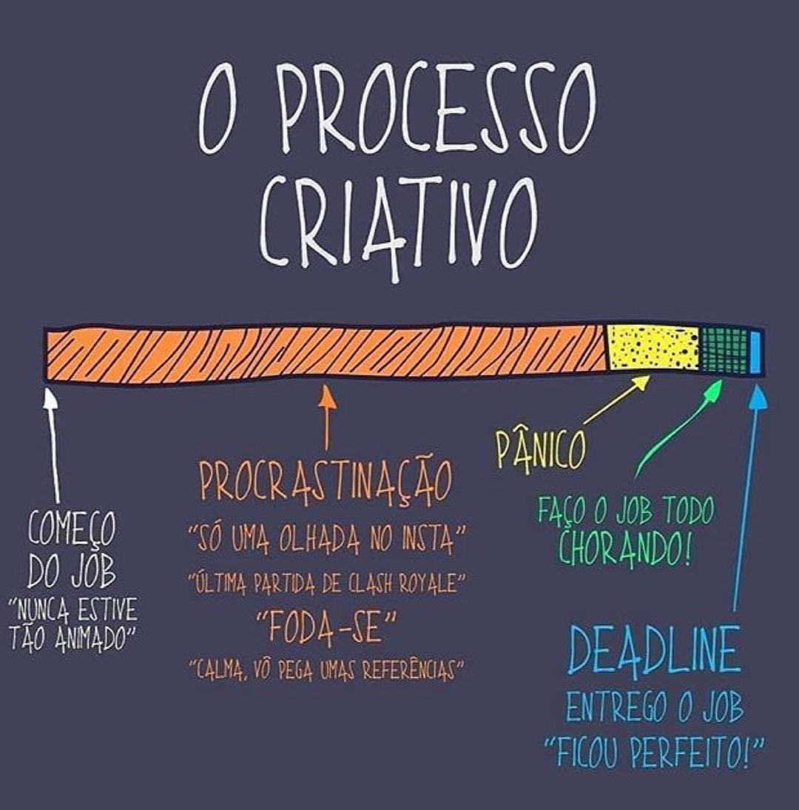
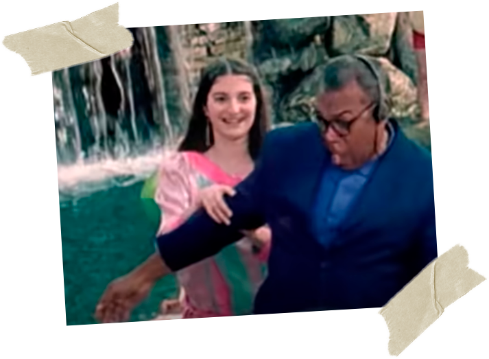

O que desperta minha criatividade:
- Em primeiro lugar, preciso que o ambiente ao meu redor esteja limpo e organizado. Do contrário, me sinto sufocado e com aquele sentimento de "preciso varrer esse chão A-G-O-R-A!".
- Ter uma música ligada ajuda muito. Dependendo do meu humor e do que precisa ser feito, opto por colocar uma música mais agitada ou mais lenta. Na dúvida, Lo-Fi sempre funciona haha.
- Acender um incenso no ambiente desperta meu lado mais intuitivo e criacionista. Prefiro aromas de canela e de alecrim para aflorar a criatividade e ajudar na concentração.
- Se as ideias não estão vindo, gosto de dançar, sozinho mesmo, no meio do ambiente onde estou. Acredito que sou uma pessoa bastante expansiva. Me mexer me ajuda a fazer as ideias fluírem.

Meu processo criativo em uma imagem.
Fonte: @digimundomarketing
Fonte: @digimundomarketing
E quando a criatividade não vem?
Embora o processo criativo seja diferente para cada pessoa, o bloqueio criativo é algo que aflinge a todos. É quase certo que, em um momento ou outro da vida, todo mundo se deparará com um destes "brancos", que faz com que todas as ideias sumam - ou pareçam ser fracas demais.Existem vários tipos de bloqueios que podem ocorrer:
- Bloqueio de percepção: quando fazemos tantas vezes a mesma coisa que acabamos entrando em um "piloto automático". Com isso, paramos de prestar atenção - verdadeiramente - no que estamos fazendo. Por conta disso, podemos acabar deixando passar muita coisa. Por exemplo: você passa tantas vezes pelo mesmo lugar que acaba nem prestando mais atenção no caminho que está seguindo, nas pessoas por quem você passa, nem na nota de dinheiro que estava perdida no chão...
- Bloqueio emocional: este tipo de bloqueio acontece quando a pessoa se depara com algum "gatilho", que desperta um sentimento negativo nela, por conta de alguma experiência passada. Por exemplo: seu avô adoeceu de cancêr de pulmão e você precisa fazer uma propaganda para uma marca de cigarros.
- Bloqueio cultural: quando sua cultura possui crenças limitantes, que te impedem de pensar além. Tabus e preconceitos são exemplos de bloqueios culturais.
- Bloqueio ambiental: se você está tentando criar algo em um ambiente que não está em sintonia com você, é muito provável que você se sinta bloqueado. Trabalhar em um ambiente desorganizado, ouvindo uma música que você não gosta, em um local que você não se sente confortável, é praticamente impossível.
- Bloqueio intelectual: trata-se daquele momento em que você não possui conhecimento suficiente sobre um assunto e, por conta disso, não consegue compreender o que precisa ser feito.
Bloqueei. E agora?
Calma, respira, não pira. O primeiro passo é descobrir o que está te bloqueando. Se é a música alta, desligue. Se os vizinhos estiverem brigando, ligue uma música. Se você não estiver entendendo o que precisa ser feito, faça como o ET Bilu e busque conhecimento.O mais importante é você entender que está tudo bem se sentir bloqueado - você só não pode NÃO fazer nada a respeito disso -. Depois de ter identificado a origem do bloqueio, resolva-a, desconstrua-a.
Ah, não julgar as suas ideias também é um bom começo para resolver os seus bloqueios.
Um empurrãozinho na criatividade:
- Seja curioso;
- Encare os desafios de frente;
- Pratique o descontentamento construtivo;
- Esteja aberto para o novo;
- Se posicione como aprendiz das situações;
- Evite julgamentos;
- Seja otimista e perseverante;
- Olhe o cotidiano com outros olhos.

Atividade:
R.E.M. | Imitation Of Life - escolher duas pessoas do vídeo e criar uma história, contando como se conheceram e o futuro delas.

"O REPÓRTER E A DONA DA FESTA"
"Em meio à pandemia de Covid-19, com mais de 1000 mortes por dia no país, existem pessoas que simplesmente não ligam e optam por se aglomerar. O motivo? Nós realmente não sabemos. Nossa equipe acaba de flagrar uma festa clandestina em bairro nobre da capital gaúcha." - diz o repórter, em frente ao local da festa.
O repórter bate à porta do local, mas ninguém atende. Nova tentativa... mas sem resposta.
"Aparentemente, não estão querendo conversar conosco." - ele completa.
Ou, talvez, só não tenham ouvido, por conta da música extremamente alta.
É então que, por suor à camisa, o repórter resolve adentrar a festa clandestina, clandestinamente. Ao entrar no recinto, a visão que tem é caótica: todos os convidados estão colados, sem máscara. Alguns bebendo, outros se beijando, outros dançando próximos e sem proteção alguma.
Eis que o repórter encontra a dona da festa:
"Senhora, a senhora é a responsável por tudo isso?"
"Sou eu sim!" - ela responde - "Como eu posso te ajudar?" - perguntou-lhe, oferecendo uma taça de bebida.
Para não fazer a desfeita, o repórter aceita gentilmente o drink.
Logo após, a equipe - que o aguardava do lado de fora - perdeu completamente o contato com o repórter.
Entrando de mansinho, o câmera man consegue filmar de relance o repórter sendo levado para algum canto da festa. Não sabendo o que estava acontecendo, a equipe de TV resolve acionar a polícia.

Agora, resta saber se o repórter sairá dessa como inocente.